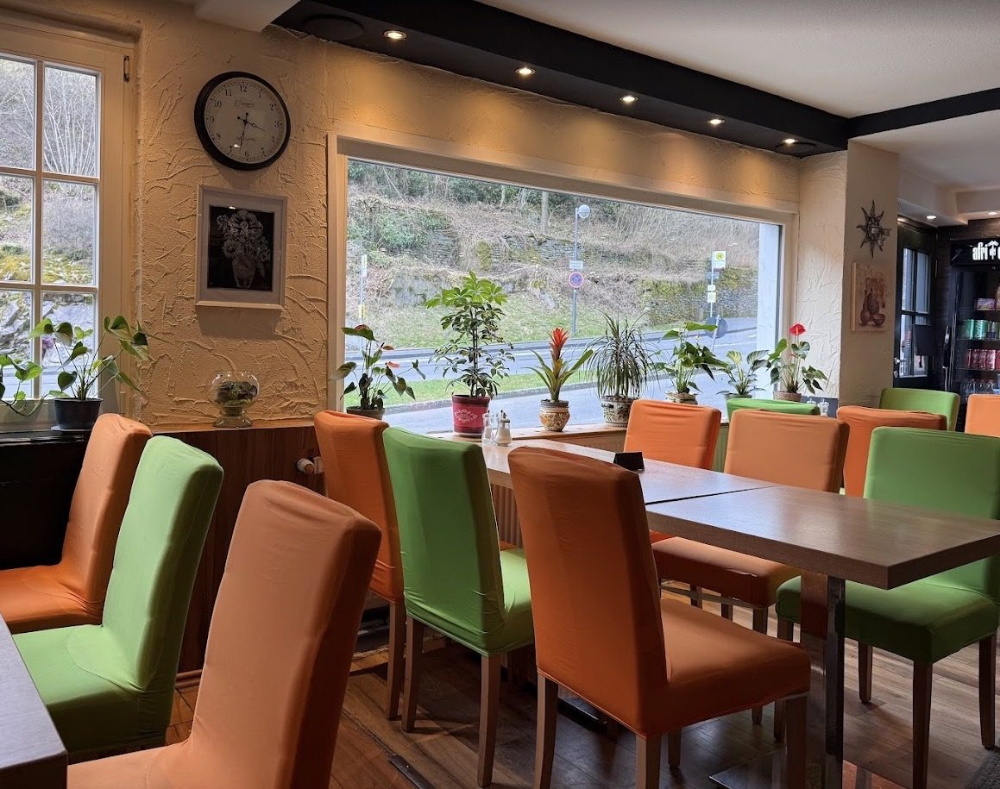

Herzlich willkommen bei Bal-Mondo 60
Mitten in Monschau, in der Laufenstraße 60, verwöhnen wir unsere Gäste seit Jahren mit ehrlicher türkischer Küche. Ob klassischer Döner, knuspriger Lahmacun oder ein frisch belegtes Pide — bei uns kommt alles frisch auf den Teller.
Wir legen großen Wert auf Qualität: Unser Gemüse wird täglich frisch geschnitten, Saucen wie Cacik und Hummus stellen wir hausgemacht her, und unser Fleisch wird schonend zubereitet. So schmeckt man bei jedem Bissen, dass hier mit Sorgfalt gekocht wird.
Egal ob Sie schnell zwischendurch etwas zum Mitnehmen suchen oder es sich bei uns gemütlich machen möchten — bei Bal-Mondo 60 sind Sie immer herzlich willkommen. Wir freuen uns auf Ihren Besuch!
Zur SpeisekarteFrische Zutaten
Täglich frisch eingekauft und verarbeitet.
Hausgemacht
Saucen, Beilagen und Desserts nach eigener Rezeptur.
Gastfreundschaft
Herzlicher Service, ob vor Ort oder zum Mitnehmen.
4,7 Sterne
Bewertet von über 275 zufriedenen Gästen.